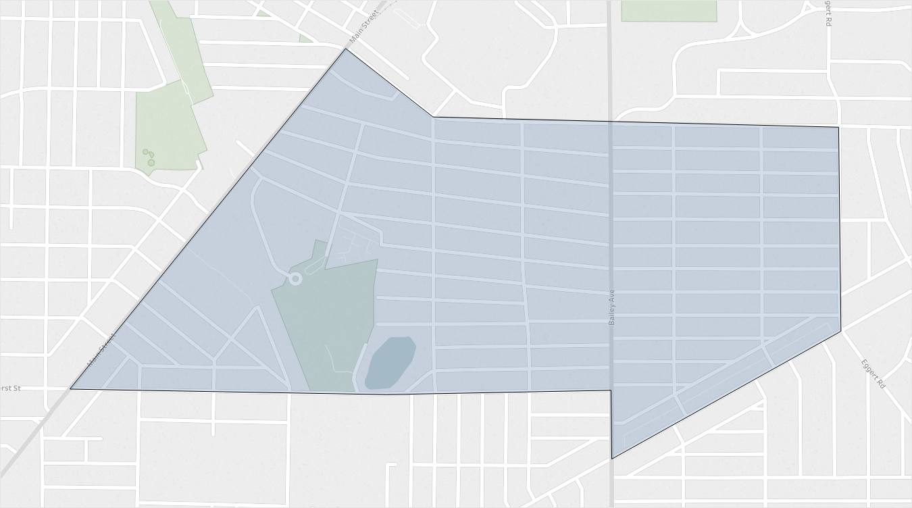

Buffalo Promise Neighborhood
Buffalo, NY
Location and people served
12,000
residents
residents
1,650
public school children
public school children
77 percent
minority
minority
46 percent
graduation rate
graduation rate

About one square mile in Buffalo, NY
About one square mile in Buffalo, NY
Major strategies used
Periodic data-driven meetings between principles of target schools to review performance indicators such as student attendance rates
Partnership with AmeriCorps where volunteers provide teaching assistance, peer mentorship, and after school help
Acquisition of 30 new lab computers for the elementary school library
Acquisition of “1:1” iPads for grades 3-6, and “1:1” HP Laptops for grades 7 and 8
Selected Accomplishments
Drop in chronic absenteeism rates for 6th, 7th, and 8th graders
Drop in student mobility rates
Rise in middle and high schoolers eating five servings of fruits and vegetables daily
Increase in students' access to broadband internet
“The Promise Neighborhoods Institute’s support and guidance have been an important resource in our work to turn the curve on kindergarten readiness for children in the Buffalo Promise Neighborhood. Through PNI’s results based accountability training sessions, our leadership developed valuable skills that allowed us to build capacity within our local network of partners.”
— Director of Finance & Information Systems, BPN